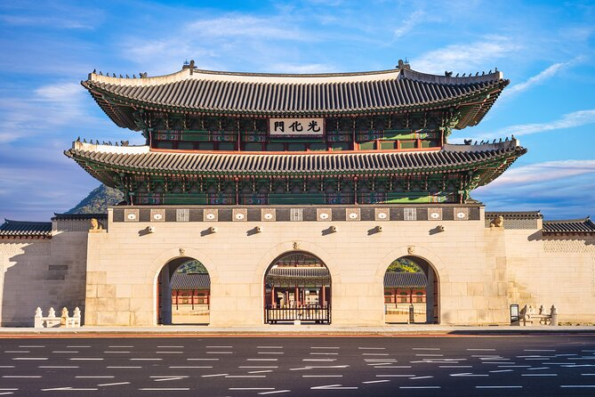

Vues magnifiques sur Séoul et les palais.
Le village de Bukchon est situé entre les palais royaux "Gyeongbokgung" et "Changdeokgung",
offrant ainsi des vues spectaculaires sur les toits traditionnels et la ville moderne environnante.
En montant sur les collines autour du village, vous pouvez admirer des panoramas impressionnants sur
Séoul, avec la silhouette de la "Seoul Tower" et les montagnes environnantes en toile de fond.
Par ailleurs, cette situation idéal du village offre un accès facile aux autres sites historiques à proximité
comme le "Musée National de Corée", ou bien le "Namsangol Hanok Village" qui est une reconstitution d'un village
hanok traditionnel, offrant des perspectives supplémentaires sur la vie coréenne d'antan.